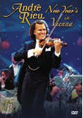

|
New Year's In Vienna (2005) - 104 Minutes
|
 |
| What could be more magical
than Andre Rieu and his world famous Johann
Strauss Orchestra performing before a live
audience in Vienna on New Year's Eve! Join Andre
and his musicians and guests as they celebrate
the year's most special evening with this
collection of all time favorites captured live
in concert. Track Listings: Gold and Silver,
Waltz, Without A Care, Come, Zigany, Emperor
Waltz, Juliska of Budapest, Vienna Blood Waltz,
Funiculi, Funicula, Gypsy Princess Medley,
Adieu, Mein Kleiner Gardeoffizier, Blue Danube
Waltz, Radetzky March, Strauss & Co. Medley,
Rigoletto Potpurri, Chianti Song, Carnival of
Venice,Circus Renz, Second Waltz, Stars and
Stripes Forever, Brazil Symphony. |
Where to buy?
|
|
DVD Tracklist
- Gold and Silver Waltz
- Without A Care (Ohne Sorgen)
- Come, Zigany
- Emperor Waltz
- The Juliska of Budapest
- Vienna Blood Waltz
- Funiculi, Funicula
- The Gypsy Princess Medley
- Adieu, Mein Kleiner Gardeoffizier
- The Blue Danube Waltz
- Radetzky March
- Strauss & Co. Medley
- Rigoletto Potpurri
- Chianti Song
- Carnival of Venice
- Circus Renz
- The Second Waltz
- Stars And Stripes Forever
- Brazil Symphony
|
|